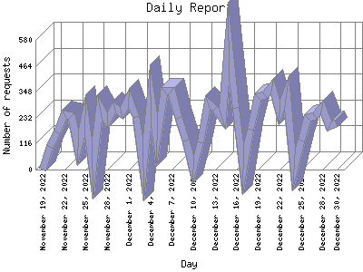

Analog 5.24
Analog 5.24 Report Magic for Analog 2.13
Report Magic for Analog 2.13The Daily Report identifies the activity for each day within the reporting period. Remember that one page hit can result in several server requests as the images for each page are loaded.

| Day | Number of requests | Percentage of the requests | |
|---|---|---|---|
| 1. | December 30, 2022 | 207 | 0.1% |
| 2. | December 29, 2022 | 195 | 0.1% |
| 3. | December 28, 2022 | 279 | 0.2% |
| 4. | December 27, 2022 | 238 | 0.2% |
| 5. | December 26, 2022 | 232 | 0.2% |
| 6. | December 25, 2022 | 129 | 0.1% |
| 7. | December 24, 2022 | 0 | 0% |
| 8. | December 23, 2022 | 344 | 0.3% |
| 9. | December 22, 2022 | 255 | 0.2% |
| 10. | December 21, 2022 | 374 | 0.3% |
| 11. | December 20, 2022 | 332 | 0.3% |
| 12. | December 19, 2022 | 323 | 0.3% |
| 13. | December 18, 2022 | 178 | 0.1% |
| 14. | December 17, 2022 | 0 | 0% |
| 15. | December 16, 2022 | 274 | 0.2% |
| 16. | December 15, 2022 | 577 | 0.6% |
| 17. | December 14, 2022 | 228 | 0.2% |
| 18. | December 13, 2022 | 271 | 0.2% |
| 19. | December 12, 2022 | 300 | 0.2% |
| 20. | December 11, 2022 | 123 | 0.1% |
| 21. | December 10, 2022 | 0 | 0% |
| 22. | December 9, 2022 | 128 | 0.1% |
| 23. | December 8, 2022 | 233 | 0.2% |
| 24. | December 7, 2022 | 353 | 0.3% |
| 25. | December 6, 2022 | 353 | 0.3% |
| 26. | December 5, 2022 | 131 | 0.1% |
| 27. | December 4, 2022 | 334 | 0.3% |
| 28. | December 3, 2022 | 0 | 0% |
| 29. | December 2, 2022 | 237 | 0.2% |
| 30. | December 1, 2022 | 322 | 0.2% |
| 31. | November 30, 2022 | 252 | 0.2% |
| 32. | November 29, 2022 | 279 | 0.2% |
| 33. | November 28, 2022 | 218 | 0.2% |
| 34. | November 27, 2022 | 278 | 0.2% |
| 35. | November 26, 2022 | 0 | 0% |
| 36. | November 25, 2022 | 242 | 0.2% |
| 37. | November 24, 2022 | 96 | 0% |
| 38. | November 23, 2022 | 238 | 0.2% |
| 39. | November 22, 2022 | 249 | 0.2% |
| 40. | November 21, 2022 | 166 | 0.1% |
| 41. | November 20, 2022 | 102 | 0% |
| 42. | November 19, 2022 | 0 | 0% |
Most active day May 3, 2008 : 2,131 requests handled.
Daily average: 251 requests handled.
This report was generated on January 1, 2023 05:52.
Report time frame December 18, 2007 17:05 to December 30, 2022 23:53.
| Web statistics report produced by: | |
| Analog 5.24 | Report Magic for Analog 2.13 |